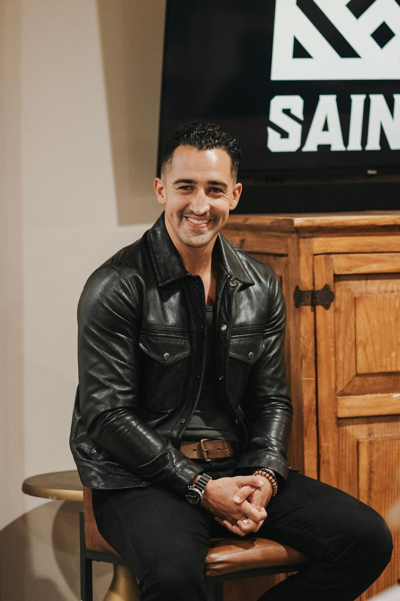

The Standard Podcast
3 million
people reached with the message
Our story

Ten years ago I spent my final days with my grandfather, Wayne Woody. Each morning he rose before the sun, opened his Bible and read. When I asked him how he chose what to read each day, he told me he had read through the Bible more than 120 times. That shook me to my core.
When he was young, he started reading it through each year, just ten to fifteen minutes first thing each morning. I committed to him that I would do the same. Ten years, a marriage, three businesses and three kids later, I have read the Bible ten times in four different versions. That daily discipline gave me the capacity to build a life dedicated to helping others do the same.
In 2020 I became a coach, and I learned that transformation begins with information but takes root when a man has another man who can call out the gold nobody else sees and build a vision that outlasts life's hardest trials.
My dream is to see 100,000 men experience the entire Bible at a time when most men are handing their thinking to someone, or something, else. I believe this work can create generational impact and give any man a shot at changing his legacy.
Preston Woody
Founder and President
Our mission
Life Builders builds men, strengthens families and changes generations through mentorship, education, leadership development and charitable support.
We remove financial barriers so men can access life-changing resources and experiences regardless of their ability to pay.
Where we're going
The Standard Podcast
3 million
people reached with the message
Bible Experience
100,000
men who experience the whole Bible
Mentorship
1,000
men mentored, free of cost
Stewardship
Life Builders is a ministry of Preston Woody Foundation Corporation, a recognized 501(c)(3) public charity. Financial stewardship, accountability and measurable impact are foundational commitments. Unless agreed otherwise in writing, gifts support the overall charitable mission and go where they can do the most mission-aligned good.
Join the work
Mentorship is free for every man we serve because partners cover the cost.